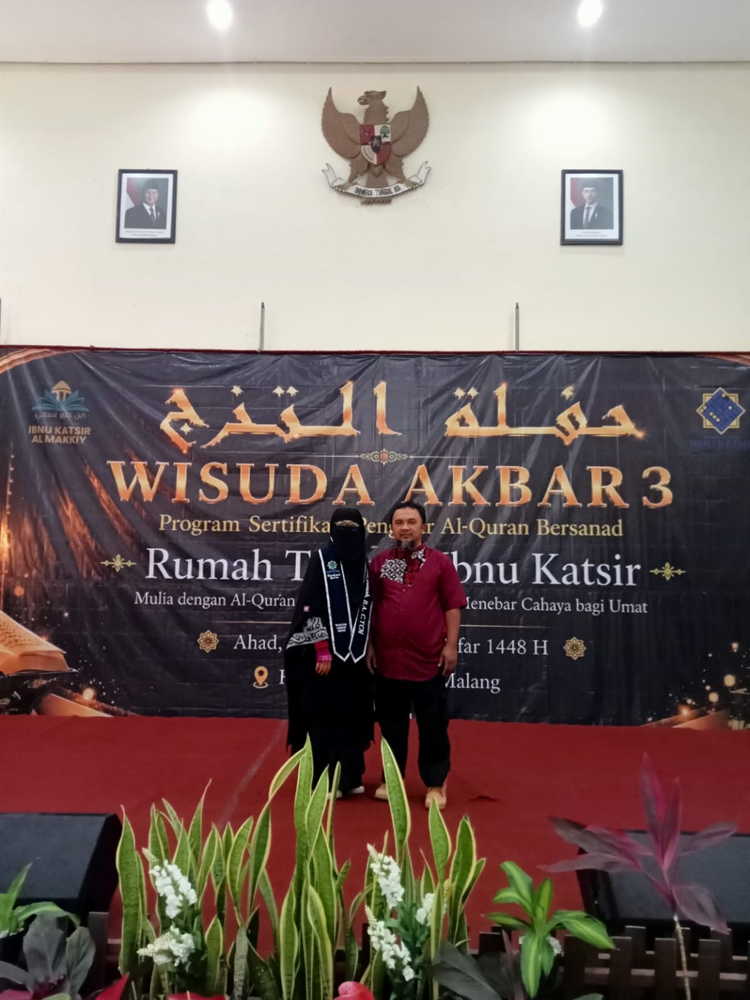
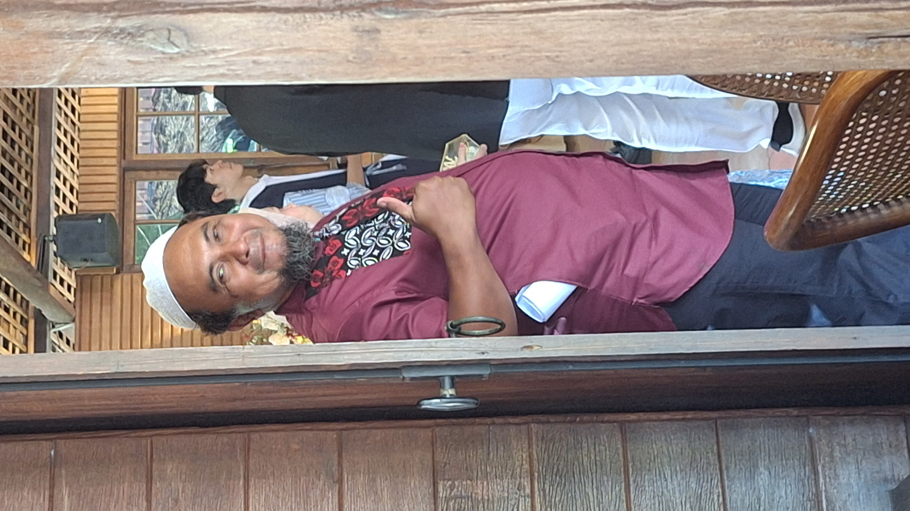
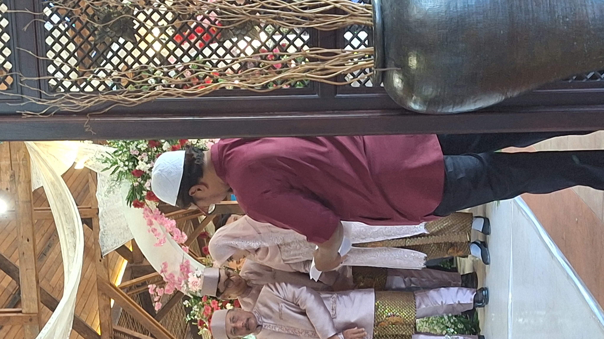
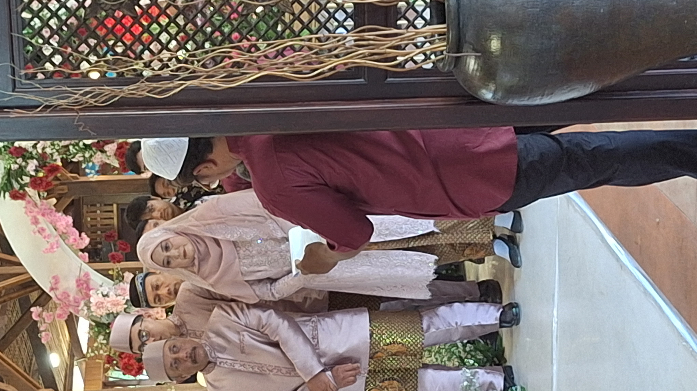

Rumah Qur'an Salsabila · Serang
Iqra. Satu ayat,
satu langkah,
setiap hari.
Tempat belajar membaca dan menghafal Al-Qur'an untuk anak-anak hingga dewasa. Kami memulai dari yang paling dasar — mengenal huruf hijaiyah — sampai menjaga hafalan, dengan bimbingan tatap muka yang sabar dan bertahap, bukan terburu-buru.
وَرَتِّلِ الْقُرْآنَ تَرْتِيلًا
"...dan bacalah Al-Qur'an itu dengan tartil (perlahan-lahan dan jelas makhraj hurufnya)."
Tentang Kami
Berawal dari teras rumah
Rumah Qur'an Salsabila dimulai tahun 2021, dari teras rumah kami sendiri. Awalnya hanya lima anak tetangga yang sore-sorenya lebih sering main game daripada mengaji. Kami ajak mereka duduk melingkar, bawa Iqra masing-masing, dan mulai dari situ.
Sekarang santri kami sudah lebih dari seratus orang, dari usia TK sampai bapak-ibu yang baru belajar mengaji di usia dewasa. Tempatnya sudah berkembang jadi ruang belajar sederhana di samping rumah, tapi caranya masih sama: satu per satu, sabar, dan tidak dikejar target yang tidak masuk akal.
"Yang kami kejar bukan cepat khatam, tapi bacaan yang benar dan hafalan yang lengket di kepala."
— Ust. Saifudin Zuhri, PengasuhVisi
Menjadi rumah belajar yang membuat siapa pun — dari anak kecil sampai orang tua yang baru mulai — merasa Al-Qur'an itu dekat dan bisa dipelajari, bukan sesuatu yang menakutkan.
Misi
- Mengajarkan bacaan Al-Qur'an sesuai kaidah tajwid, bertahap sesuai kemampuan tiap santri.
- Membimbing hafalan dengan target yang realistis dan muraja'ah yang konsisten, bukan sekadar kejar setoran.
- Membuka kesempatan belajar untuk siapa saja, termasuk keringanan biaya bagi yatim dan dhuafa.
Program Pembelajaran
Tiga tahap, dari kenal huruf sampai menjaga hafalan
Setiap santri masuk sesuai kemampuan awalnya lewat tes bacaan singkat, lalu berjalan mengikuti tiga tahap berikut. Naik tahap tidak ditentukan oleh lamanya belajar, tapi oleh kesiapan bacaannya.
-
Tahap 1
Iqra & Tahsin Dasar
Mengenal huruf hijaiyah, cara keluarnya huruf (makhraj), tanda baca, sampai lancar membaca Iqra jilid akhir. Cocok untuk anak mulai usia 5 tahun maupun dewasa yang baru belajar dari nol.
-
Tahap 2
Tahsin Lanjutan & Tajwid
Memperbaiki bacaan langsung dari mushaf sesuai kaidah tajwid, banyak latihan talaqqi (dibaca dan dikoreksi langsung oleh pengajar) sampai bacaan cukup rapi untuk mulai dihafalkan.
-
Tahap 3
Tahfidz & Muraja'ah
Menghafal per halaman dan per juz dengan target yang disesuaikan kemampuan masing-masing, disertai setoran mingguan dan jadwal muraja'ah rutin supaya hafalan tidak mudah hilang.
Kelas Anak-anak
Usia 5–12 tahun, kelompok kecil 5–8 santri, banyak selingan agar tetap betah.
Kelas Remaja & Dewasa
Untuk yang baru mulai belajar mengaji ataupun ingin memperbaiki bacaan lama.
Kelas Privat
Satu pengajar satu santri, jadwal lebih fleksibel menyesuaikan waktu Anda.
Kelas Online
Lewat panggilan video untuk santri di luar Soreang atau yang berhalangan datang langsung.

Profil Pengasuh
Ustadz Saifudin Zuhri (Katanya)
Menghafal Al-Qur'an 30 juz sejak masih nyantri di Pondok Pesantren Al-Ittifaq, Ustadz Fauzan sudah mengajar mengaji selama lebih dari 12 tahun. Sebelum mendirikan Rumah Qur'an Nurul Hikmah, beliau sempat mengajar tahfidz di pesantren dan menjadi imam rawatib di musala dekat rumah.
Sanad qiraahnya bersambung lewat gurunya di pesantren, dan sampai sekarang beliau masih rutin mengikuti majelis tahsin untuk menjaga bacaannya sendiri. Bagi Ustadz Fauzan, mengajar mengaji itu soal telaten — bukan siapa cepat, tapi siapa yang bacaannya benar-benar matang.
Jadwal & Biaya
Simpel dan mudah diikuti
| Hari | Waktu | Kelas | Pengajar |
|---|---|---|---|
| Senin – Kamis | 16.00 – 17.30 | Iqra & Tahsin Dasar (Anak) | Ust. Udin |
| Senin – Kamis | 19.30 – 21.00 | Tahsin & Tahfidz (Remaja/Dewasa) | Ust. Udin |
| Sabtu | 08.00 – 10.00 | Tahfidz & Muraja'ah | Ust. Udin |
| Minggu | 08.00 – 10.00 | Kelas Privat (sesuai janji) | Ust. Udin |
Rp150.000/bulan
Kelas kelompok (anak, remaja, dewasa)
Rp300.000/bulan
Kelas privat, 4x pertemuan
Gratis
Untuk santri yatim dan dhuafa — cukup hubungi kami langsung
Galeri
Sedikit cerita dari ruang belajar



Testimoni
Kata para wali santri
"Anak saya dulu susah banget disuruh ngaji, sekarang malah dia yang ingetin jadwalnya. Ustadznya sabar banget ngadepin anak-anak."
Bu Rini — wali dari Fathan, Kelas Iqra
"Saya belajar mengaji lagi di usia 34 tahun, sempat malu. Tapi di sini nggak ada yang ngerasa aneh, semua mulai dari dasar juga."
Pak Deni — Kelas Dewasa
"Progresnya jelas kelihatan tiap bulan karena ada catatan hafalan. Jadi kami di rumah juga tahu harus bantu murajaah bagian mana."
Bu Wulan — wali dari Aisyah, Kelas Tahfidz
Daftar & Kontak
Datang langsung, atau kirim pesan dulu
Silakan datang langsung saat jam belajar untuk lihat suasana kelas, atau isi form untuk bertanya — nanti pesan Anda akan langsung terbuka di WhatsApp kami.
- AlamatJl. Azalea
- WhatsApp0817-7678-9553
- Instagram@s.zuhri15
- Jam KunjunganSenin–Sabtu, 15.30–21.00